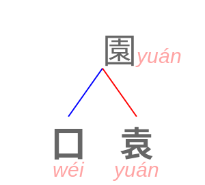
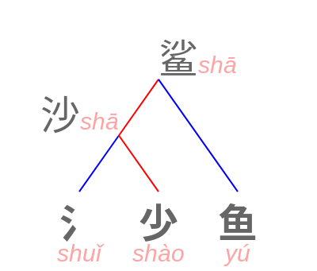
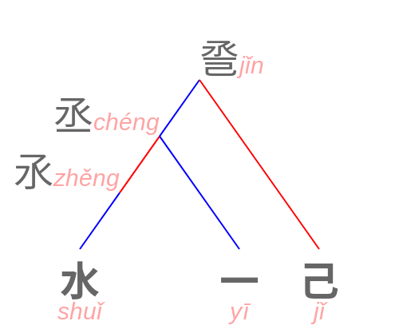
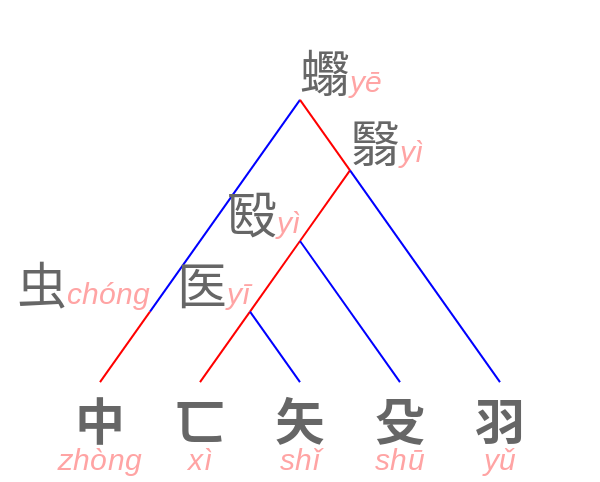
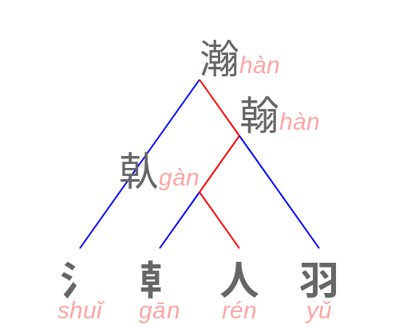

Introducción
Todos los actuales grafemas chinos son logogramas (grafemas vinculados directamente a palabras/morfemas y no a ideas o imágenes). No obstante pueden clasificarse según su diseño originario en pictogramas, ideogramas o fonosemagramas.
Este artículo se centrará en los fonosemagramas; para una explicación de los pictogramas e ideogramas consulte el procedimiento jeroglífico. Para información general adicional consulte la wikipedia. El objetivo de este proyecto es visualizar y determinar el grado de divisibilidad de los fonosemagramas.
En la muestra observada (pulse para consultar todos estos grafemas) cerca del 80% son fonosemagramas:
| clase (pulse para acceder a las tablas) | frecuencia |
|---|---|
| pictogramas | 227 |
| ideogramas | 1840 |
| fonosemagramas | 6966 |
| TOTAL | 9033 |
Análisis y complejidad de los grafemas
Consideremos algunos modos de descomposición:
-
no recursiva:
-
basada en el número de trazos (esto es, continuos)
los radicales con mayor número de trazos son con 16 龍 'dragón' 龜 'tortuga' y con 17 龠 'flauta'. Puede consultar este enlace externo
-
-
recursiva, que puede ser:
-
etimológica: presentan recursividad los fonosemagramas (en componentes fonético y semántico) y algunos ideogramas , esto es, ciertas unidades pueden incorporarse a la composición de otras mayores.
Que los ideogramas también son recursivos se comprueba sin salir del dato: 680 de los 1840 (37 %) aparecen dentro de otro grafema, y en 664 de esos casos lo confirman las dos descomposiciones gráficas, la n-aria y la binaria de Wikimedia, que son fuentes distintas. 死
dead; deathes uno: está dentro de 屍corpse, 斃 y 毙to die, 葬to buryy 薨death of a prince. La coherencia se lee en las definiciones y no hace falta ninguna glosa que la cuente.NOTA: la descomposición prueba que la pieza está; no prueba por qué. Las glosas de composición que trae el dato —«un cadáver 死 tendido 廾 bajo la hierba 艹»— son mnemotecnia para quien aprende, no etimología con aparato, y en este artículo no se usan como prueba de nada.
-
gráfica. atiende a la división del espacio como codifican los caracteres de descripción ideográfica
⿰ ⿱ ⿲ ⿳ o ⿴ ⿵ ⿶ ⿷ ⿸ ⿹ ⿺ o ⿻鳝 = ⿰⿱⿱⺈⿵⿰丨冂⿱⿻一丨一一⿱⿱⿰丶丷羊⿱⿱⿰丶丷一⿱⿰丨冂一
NOTA: La división etimológica y gráfica no siempre coinciden
-
Fonosemagramas
Los fonosemagramas son unidades compuestas por un componente fonético (que codifica la pronunciación) y otro semántico. El semántico sólo desambigua al signo escrito y no tiene ninguna expresión en el habla (esto evidencia que la escritura es siempre más precisa que el habla) y clasifica el concepto en una taxonomía no sistemática de la realidad, por ejemplo: según su material, como agua 氵para líquidos o acciones con líquidos, madera 木 para muebles entre otros, mano 扌para acciones manuales, etc...

En adelante los colores indicarán el componente semántico y fonético
NOTA: la clase no es homogénea. De los 6966 fonosemagramas de la muestra, 6760 declaran las dos partes; 157 no dicen cuál es la fonética y 49 no dicen cuál es la semántica. Un recuento por «fonosemagrama» incluye, pues, 206 unidades que no se pueden descomponer.
NOTA: el radical no es el componente semántico. Coinciden casi
siempre —6646 de 6917— pero divergen en
271 casos, y ahí se ve la diferencia
entre las dos cosas: el radical es la dirección postal del diccionario y el
componente semántico es una afirmación etimológica.
举 to raise se archiva bajo
丶 y significa con 扌 'mano'; 乩
to divine se archiva bajo 乚 y significa con 占 'adivinar'.
Elección del componente fonético

- 鲨 shark shā
En este ejemplo se observa un categorizador 鱼 relacionado con animales marinos y un componente fonético /ʂa˥/ 沙 que proporciona la pronunciación a 鲨.
Sin embargo existían varios logogramas con esa misma pronunciación lo cual nos suscita una pregunta sobre el
diseño del grafema ¿por qué se escogió 沙 y no otro de igual pronunciación? ¿por el refuerzo del
subcomponente
agua 氵? ¿por su relación con la arena 沙?
La muestra contesta, y en tres pasos.
Casi nunca hubo entre qué elegir. Grafemas que se lean shā hay 16, pero solo dos sirven alguna vez de componente fonético: 杀 y 沙. Y en general, tomando por candidatos los de la misma serie fonética de Karlgren que sí se usan para escribir un sonido, en el 54,6 % de los 1520 casos medibles el candidato era uno solo.
El refuerzo no existe. Que el fonético lleve ya dentro el semántico —el 氵 de 沙— ocurre en 138 de 6760 (2,0 %), y barajando los fonéticos al azar salen 183 (2,7 %): por debajo del azar.
Donde sí hubo elección, 690 casos, manda la economía.
| se escoge… | observado | por azar | |
|---|---|---|---|
| el que ya compone más grafemas | 78,8 % | 42,6 % | ×1,85 |
| el de menos trazos | 66,2 % | 40,7 % | ×1,63 |
| control: el de más trazos | 21,0 % | 42,2 % | ×0,50 |
El azar cuenta los empates. La fila de control es la que convierte esto en medición: un artefacto no se invertiría.
Se prefiere la pieza que ya está en circulación y la que se escribe con menos trazo. Tres ejemplos, del típico al que rompe la regla:
- 哺 'masticar, alimentar' escoge 甫, que compone otros veinte, y descarta 父 'padre', más corto: gana la pieza usada, no la barata.
- 倚 'apoyarse' escoge 奇 (compone 17) frente a 可 (5 trazos, compone 16): dos piezas igual de corrientes, y ninguna emparentada con «apoyarse».
- 儻 'si acaso' hace lo contrario de todo: escoge 黨, veinte trazos y sin descendencia, teniendo a mano 尚, de ocho y con veintitrés. Es tendencia, no ley.
Y el significado, mirado de frente, tampoco motiva: el fonético elegido comparte alguna palabra de su definición con el grafema en el 2,5 % de los casos, y un rival de su mismo grupo en el 1,8 %.
NOTA: las dos cifras tienen truco. «Compone mucho» es en parte consecuencia de haber sido elegido, así que lo medido es que el sistema concentra el trabajo en pocas piezas. Y la prueba del significado solo ve el parentesco que asoma en la definición: no ve que 停 'detenerse' se escriba con 亭 'pabellón', que es donde uno se detiene. El 2,5 % es un suelo.
La rama solo suena igual en chino antiguo
Decir que 沙 /ʂa˥/ da la pronunciación de 鲨 funciona porque ahí el mandarín todavía lo conserva. Casi nunca es así: la relación fonética es de hace dos mil años y el mandarín la ha borrado. Una rama cualquiera lo enseña:
- 各 individual; each, every gè · *kˤak
En mandarín se lee gè, gé, luò y no parece familia ninguna; en chino antiguo
reconstruido es *kˤak, *kˤrak, *kə.rˤak y lo es
sin discusión. Por eso la reconstrucción de Baxter-Sagart manda sobre el pinyin: es la
prueba, y la glosa es el comentario. La cubre, eso sí, solo el 35 % de la
muestra —3359 de 9574—, así que de dos tercios de los grafemas no se puede
decir más que «sin atestiguar en el corpus clásico».
Los árboles están construidos sobre este criterio.
Verificación independiente: las series de Karlgren
Que un componente sea el fonético es una afirmación, y conviene comprobarla con una
fuente que no sea la que la hizo. La hay: el campo GSR, el número de
serie fonética de Karlgren. Si dos grafemas emparentados caen en la
misma serie, la relación queda confirmada por fuera.
De las aristas comprobables, 1521 se confirman (88,1 %) y 205 se discuten (11,9 %). Ese 12 % no es ruido que estorbe: es donde se aprende que esto es reconstrucción y no dogma, y por eso se marca en vez de ocultarse.
Y hay un caso más grave, con firma propia: cuando el componente registrado como
semántico cae en la serie del carácter y el
registrado como fonético cae en otra, las dos
casillas están cambiadas. De los 854 grafemas en que los tres llevan serie,
13: 勒 協 否 欿 荒 誾 謠 躅 閔
魏 鸞 鼙 齋. En 勒 to tighten,
por ejemplo, el dato da 力 como semántico y 革 como fonético, y Karlgren pone a 勒 y a
力 en la serie 0928 y a 革 en la 0931. Uno de ellos se equivoca, y el árbol de
瀚 del final de esta página enseña un caso donde no hay duda de cuál.
Recursividad semántica
La composición fonosemántica es recursiva cómo se ha podido observar: un grafema constituido por un componente fonético y otro semántico puede, a su vez, ser un constituyente de otro grafema.

Se observa algo poco común: que hay un trazo azul que no es terminal
Es poco común porque la recursividad semántica es muy limitada frente a la fonética; mayormente los grafemas se incorporan como componentes fonéticos y sólo una minoría (25 localizados en la muestra) lo hacen como componentes semánticos.
Máxima divisibilidad
| divisibilidad | frecuencia, nº de grafemas |
|---|---|
| 4 | 4 |
| 3 | 93 |
| 2 | 1392 |
| 1 | 5473 |
El nivel máximo de divisibilidad observado para los fonosemagramas es de 4. Y está presente en 4 fonosemagramas: 礴, 臟, 蘩 y 蠮

- 蠮 bee yē

- 瀚 wide, vast, extensive hàn
NOTA: el dato asigna mal el último nivel de este árbol. A 倝
le atribuye 龺 como componente semántico y 人 como fonético, y es al revés.
El chino antiguo lo decide: 倝 *[k]ˤar-s, 幹 *[k]ˤar-s y
翰 *m-kˤar-s caen en la misma serie fonética de Karlgren, la 0140, y
干 en la contigua; 人 *ni[ŋ] está en la 0388 y no comparte con ellos
ni ataque, ni rima, ni coda. El sonido viene del lado 干/龺 y el 人 es un trazo.
Lo confirma la propia fuente por otro camino: su pista para 倝 dice solo
sunlight, que describe a 龺, y la de 幹 dice
Sunlight 龺 suggests "dry"; a club 人干 suggests "invade", donde el
人 es un garrote dibujado y no un sonido.
El árbol se deja como está porque se dibuja del dato y corregirlo a mano sería apartarse de la fuente sin decirlo. El caso no es único: hay trece grafemas en los que el componente registrado como semántico es justamente el que suena igual, y el registrado como fonético no. Está medido en las fuentes.
La otra recursividad, la gráfica
El 4 de arriba es la divisibilidad etimológica. Queda por dar la gráfica, que se anunció al principio como una manera distinta de descomponer y llega mucho más lejos, porque cuenta trazos dentro de trazos y no significados dentro de significados. Son tres medidas y conviene no confundirlas:
| medida | de dónde sale | máximo | quién lo alcanza |
|---|---|---|---|
| etimológica | componente semántico + fonético | 4 | 礴 臟 蘩 蠮 |
| gráfica, n-aria | descripción ideográfica ⿰⿱⿲… |
8 | 儺 擲 攤 灘 癱 縮 缩 蓿 襫 躑 |
| gráfica, binaria | descomposición izquierda · derecha de Wikimedia | 7 | 擲 躑 |
El caso que las separa es 躑
to hesitate: 7 niveles si se parte siempre en dos,
8 si se admite partir en tres o más, y solo 1
etimológicamente: se parte una vez, en 足 'pie' y 鄭, y ahí se acaba. Decir «divisibilidad» sin decir cuál de las
tres es el camino más corto para que dos mediciones correctas se contradigan: ocurrió
en las notas de este proyecto, donde una decía 7 y otra 8 del mismo
carácter.